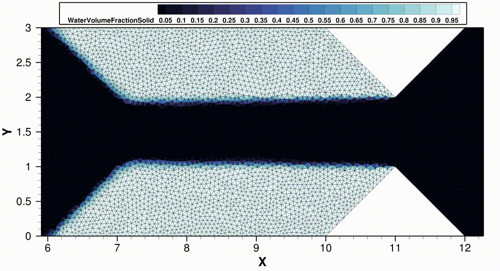
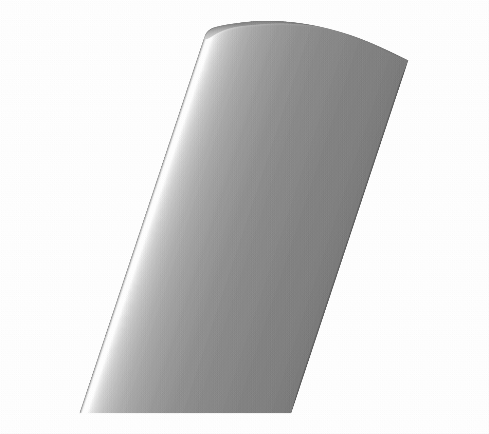
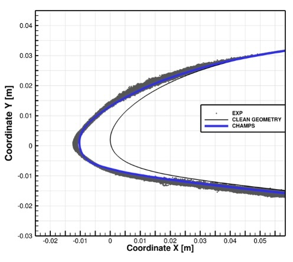
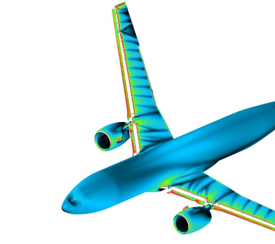
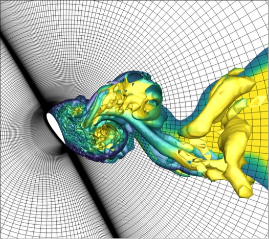

For this, the tenth interview in our 7 Questions for Chapel Users series, we return to the starting point of the series, revisiting Chapel’s role in supporting CHAMPS, a world-class Computational Fluid Dynamics Framework developed at Polytechnique Montréal. However, where that inaugural interview was with Professor Éric Laurendeau, the Principal Investigator of the CHAMPS project, this one focuses on the perspective of a few of the students who are doing the day-to-day science and implementation work first-hand. Without further ado, let’s meet them:
1. Who are you?
Maxime: My name is Maxime Blanchet, and I am a Ph.D. student in co-supervision between Université de Strasbourg and Polytechnique Montréal under the supervision of Professor Éric Laurendeau. I hold a bachelor’s degree in aerospace engineering and completed my master’s thesis at Polytechnique Montréal in aerodynamics, more specifically on predicting ice shapes forming on aircraft surfaces under certification conditions.
Karim: My name is Karim Zayni. After earning my bachelor’s degree in France, I moved to Canada, where I completed a master’s degree in mechanical engineering. I am currently a Ph.D. student in aerospace engineering at Polytechnique Montréal under the supervision of Professor Éric Laurendeau. My research focuses on computational fluid dynamics (CFD) and high-performance computing (HPC). More specifically, I co-develop, together with Maxime, an ice-prediction solver.
Baptiste: My name is Baptiste Arnould, and I am also a Ph.D. student at Polytechnique Montréal conducting my research under the supervision of Professor Éric Laurendeau and Professor Roberto Paoli. My work focuses on computational fluid dynamics, with an emphasis on modeling turbulent flow regimes, particularly the chaotic, vortex-dominated dynamics encountered in aircraft takeoff and landing configurations.
“CHAMPS is an unstructured solver written in Chapel for complex aerodynamic simulations and deployed on HPC systems.
”
All: We are pursuing these efforts as part of the team that develops and maintains CHAMPS, the CHApel MultiPhysics Simulation framework. CHAMPS is an unstructured solver written in Chapel for complex aerodynamic simulations and deployed on HPC systems. Our team has spent more than 7 years working with this solver, performing large-scale simulations and improving its efficiency and scalability.
Beyond our individual efforts described above, the CHAMPS team also works on high- and low-fidelity aerodynamic modeling, drag prediction, unsteady aerodynamics, wing fluid-structure interaction, ice accretion on aircraft, and GPU programming. We have participated in major international benchmarking initiatives such as the Ice Prediction Workshop (slides), the High-Lift Prediction Workshop, and the Drag Prediction Workshop Series. These workshops are key collaborative efforts in the community, allowing academic, industrial, and commercial solvers to be rigorously compared at the forefront of current scientific knowledge.
2. What do you do? What problems are you trying to solve?
All: We work on developing advanced numerical simulations to improve the prediction of complex aerodynamic phenomena that are critical for aircraft certification. Two of the main challenges we address are turbulent flows in demanding flight configurations and ice formation on aircraft surfaces.
During takeoff and landing, aircraft operate near the limits of their flight envelope, where the flow becomes highly turbulent, separated, and dominated by vortical structures. Accurately predicting these flow patterns is difficult, and conventional industrial simulation methods often struggle to capture the relevant physics. Because these conditions are essential for certification, manufacturers still rely heavily on expensive wind-tunnel experiments and flight tests to evaluate aircraft performance.
The same aircraft, flying through clouds containing supercooled water droplets, can experience ice accretion on their wings and other surfaces. Ice buildup can significantly alter the aerodynamic performance of the aircraft, and therefore represents a major safety concern. Certification currently depends largely on costly experimental campaigns, both in specialized icing wind tunnels and in-flight tests.
“In our lab, there is a lot of turnover as students arrive and graduate, so maintainability and readability are essential. Chapel’s parallel model significantly reduces the learning curve for new students.
”
Our goal is to improve the accuracy and reliability of numerical models so that simulations can better predict these complex phenomena. This involves developing high-fidelity CFD methods. It also requires improving models that describe turbulent airflow and the motion of water droplets in the flow. These models must capture droplet impact on aircraft surfaces as well as the heat-transfer processes that determine whether water freezes, melts, or runs back before freezing.
By making simulations more accurate, our work aims to reduce reliance on expensive testing, allow engineers to evaluate a wider range of configurations, and accelerate aircraft development while maintaining strict safety standards. Beyond aviation, these advances also have applications in other icing-prone systems such as wind turbines and power lines, which are particularly relevant in cold regions like Quebec.
3. How does Chapel help you with these problems?
Maxime: Chapel plays a central role in our daily work. In our lab, there is a lot of turnover as students arrive and graduate, so maintainability and readability are essential. Chapel’s parallel model significantly reduces the learning curve for new students. Features like forall loops make parallelization natural and expressive, allowing us to focus on the physics rather than low-level parallel programming details. This is particularly important for large aero-icing simulations involving millions of computational cells and distributed memory systems.
Karim: One of Chapel’s main strengths is that it provides a high-level and expressive model for parallel programming. Features such as (co)forall loops make it natural to express parallel computations across distributed and shared memory systems. Compared with traditional approaches based on C++ combined with MPI and OpenMP, Chapel removes much of the low-level implementation code and synchronization complexity. This allows us to focus more on physical and numerical modeling rather than on low-level parallel programming details.
“Many concepts that can be cumbersome to implement and maintain in C++ with OpenMP and MPI are more naturally expressed in Chapel, which makes development significantly smoother.
”
Baptiste: As I already said, my research heavily relies on high-performance computing (HPC), so using a language with strong support for scalable parallel programming is essential. In this context, Chapel has proven to be an excellent fit. Since joining Professor Laurendeau’s lab in 2023, Chapel has become my primary development tool. The group had adopted Chapel a few years before my arrival, and the simulation code we continue to maintain and develop was already written in it. Coming from a C++ background, I had to learn a new language, but the transition was surprisingly fast. If I had to compare the two, I would say that Chapel provides a higher level of abstraction, especially for parallel computing in comparison to C++. Many concepts that can be cumbersome to implement and maintain in C++ with OpenMP and MPI are more naturally expressed in Chapel, which makes development significantly smoother.
All: Chapel is not just an auxiliary tool but the core language used to develop our simulation software. We write and test most of our code on local workstations, which are sufficient for many research cases. For larger and more realistic aircraft simulations involving millions of computational cells, we run our programs on HPC clusters such as those provided by the Digital Research Alliance of Canada. Some of our projects also target GPU-based systems.
4. What initially drew you to Chapel?
Maxime: I was part of the early team that started working with CHAMPS. We were initially drawn to Chapel for many of the same reasons that still motivate us to use it today: its simplicity, its natural approach to parallelism, and its ability to scale from a workstation to large supercomputers without requiring major changes to the programming model. Compared with traditional MPI/OpenMP development, Chapel offers a much cleaner and more expressive way to write parallel programs, which immediately stood out to us.
“Chapel's not only elegant and easy to use, but also capable of delivering the performance required for large-scale simulations. It allows us to write compact and readable code while still running complex multiphysics simulations on HPC systems.
”
Karim and Baptiste: For us, Chapel was also the language already used in our research group when we joined the lab. The CHAMPS simulation framework had been initiated in Chapel by previous contributors, and the project had already gained strong momentum. Continuing development in Chapel allowed us to build on that existing foundation while preserving years of work and enabling new students to become productive quickly.
What ultimately convinced us was discovering that Chapel was not only elegant and easy to use, but also capable of delivering the performance required for large-scale simulations. It allows us to write compact and readable code while still running complex multiphysics simulations on HPC systems. That balance between productivity, scalability, and performance made Chapel a natural choice for continuing the development of our research software.
5. What are your biggest successes that Chapel has helped achieve?
Maxime: One of our biggest successes has been our participation in the Ice Prediction Workshops (IPW), where leading icing solvers from institutions such as Bombardier (Canada), NASA (United States), ONERA (France), and DLR (Germany) are benchmarked. Using CHAMPS developed in Chapel, we have produced ice shape predictions and compared them using standardized test cases, demonstrating that they are competitive with these well-established solvers. Achieving this with a research code developed in an academic environment is something we are particularly proud of.
“One of our biggest successes has been demonstrating that a relatively small academic team can develop and run a competitive high-fidelity simulation framework using Chapel.
”
Just as importantly, Chapel allows us to continuously integrate new physical models without overwhelming code complexity. Here is an example of what we can do with CHAMPS:

Figure 1: Accumulation of ice on triangular extrusions inside a wind tunnel using a volumetric mesh and iterating in time. Such test cases help with validating and verifying what we implement
into CHAMPS.
Karim: Chapel has allowed us to develop a modular multiphysics solver that researchers in our group can readily use and extend, lowering the barrier to contributing to complex HPC software. One of our biggest successes has been demonstrating that a relatively small academic team can develop and run a competitive high-fidelity simulation framework using Chapel. Our solver, CHAMPS, has reached a level of maturity that allows us to participate in major international benchmarking initiatives alongside leading industrial and research institutions, while also predicting intricate ice shapes that compare well with experimental data as well as with results from industrial and academic participants.

Figure 2: Ice accretion on a three-dimensional swept wing. The animation starts with the clean wing geometry and progresses to the final ice shape after accretion. The configuration corresponds to a test case from the first Ice Prediction Workshop (IPW1), representing a swept-wing model tested in an icing wind tunnel.

Figure 3: After simulating the ice accretion process, the predicted ice shapes are compared with three-dimensional scans of the experimentally accreted ice to assess the validity of the numerical model. In addition, chordwise cuts are compared with the experimental ice shape to provide a more detailed evaluation of the agreement. In this case, the ice shape predicted by CHAMPS (shown in blue) shows good overall agreement with the experimental geometry (the grey dots).
Baptiste: Similarly, we have participated in large international aerodynamic benchmarks such as the AIAA High-Lift Prediction Workshop (HLPW), which focuses on complex takeoff and landing configurations involving highly separated turbulent flows. These simulations are computationally demanding and require robust, scalable numerical tools. Chapel enabled us to expand our simulation capabilities quickly and produce meaningful results within the tight timelines typical of these collaborative efforts.

Figure 4: Skin-friction lines on the Common Research Model. The geometry includes the wing, empennage, fuselage, slats, flaps and their brackets, as well as the engine nacelle. This post-processing helps identify where the flow remains attached over the wing, and highlights the separation regions.

Figure 5: Turbulent structures and vortices created behind a 3D NACA0025 wing
at 60° angle of attack.
6. If you could improve Chapel with a finger snap, what would you do?
Maxime: If I could improve Chapel with a finger snap, one area we would focus on is interoperability with external libraries, especially modern C++ libraries. As a small academic team, we need to concentrate our efforts on scientific challenges rather than reimplementing existing numerical tools. Many high-performance libraries used in scientific computing are written in C or C++, and while Chapel’s C interoperability works very well, integrating complex C++ libraries can still be challenging and time-consuming. Smoother and more native interaction with the broader C++ ecosystem would make it easier to leverage existing software and accelerate development.
Karim: Another important improvement would be development workflow and tooling. When working with large multi-physics codes containing several solvers and models, compilation time can become significant during development and testing. Faster incremental builds or more flexible compilation workflows would greatly improve iteration speed. In the same spirit, stronger integration with modern profiling, debugging, and performance-analysis tools would make it easier to diagnose bottlenecks, track memory usage, and optimize large-scale simulations.
Baptiste: I would also like to see Chapel continue to balance its high-level abstractions with deeper performance control. Chapel already provides an elegant way to express parallelism, but additional tools to more easily explore low-level optimizations, such as vectorization, SIMD control, or advanced performance tuning, would be valuable for pushing HPC applications even further.
All: As AI-assisted programming tools become increasingly important for developers, stronger visibility and support for Chapel in AI-based development environments could significantly help the community. Ensuring that modern coding assistants [note:Editors’ note: Readers interested in this topic are encouraged to check out this blog post or demo by Daniel Fedorin about his experiences using AI-based tools to write Chapel.] well would reduce development time and help smaller research groups remain productive despite having fewer resources than teams working with more widely used languages.
7. Anything else you’d like people to know?
All: We would add that Chapel has genuinely transformed the way we develop high-performance scientific software. Its combination of simplicity, readability, and scalable parallelism allows a relatively small research team to tackle extremely complex problems, from full-aircraft simulations to large-scale multi-physics problems.
In scientific computing, researchers already need deep expertise in physics and engineering to conduct meaningful work. Ideally, the tools we use should help us focus on those challenges rather than on infrastructure complexity. Chapel helps bridge that gap by making parallel programming more approachable while still delivering the performance required for large-scale simulations. It allows us to spend more time thinking about physics and less time dealing with low-level parallel programming details—even though we still enjoy that side of computing as well.
For researchers and students interested in high-performance computing, Chapel can be an excellent entry point into parallel programming. It provides high-level abstractions that make it easier to get started, while still allowing users to progressively explore more advanced HPC concepts as their experience grows. This accessibility is particularly valuable in academic environments where new students regularly join projects and need to become productive quickly.
“Chapel has genuinely transformed the way we develop high-performance scientific software. Its combination of simplicity, readability, and scalable parallelism allows our relatively small research team to tackle extremely complex problems.
”
Looking ahead, we plan to continue expanding the CHAMPS simulation framework with more advanced physical models and GPU acceleration. Chapel will remain at the core of our development, helping us explore new research directions while keeping our codebase efficient, maintainable, and scalable.
And, more simply: if you are curious about parallel programming or developing scientific applications for HPC systems, we would strongly encourage you to give Chapel a try. It is a powerful language with a supportive and growing community, and it has been an excellent tool for our research.
We’d like to thank Maxime, Karim, and Baptiste for taking part in our 7 Questions for Chapel Users interview series, and for providing their perspectives on Chapel’s use in their graduate work. For more information on CHAMPS, see this joint talk between Karim, Éric Laurendeau, and Engin Kayraklioglu for the NASA Ames AMS seminar series last year, or browse its slides. Additional talks about CHAMPS can be found in the archives of ChapelCon and CHIUW, such as this recent talk by Anthony Chrun et al. at ChapelCon ‘25.